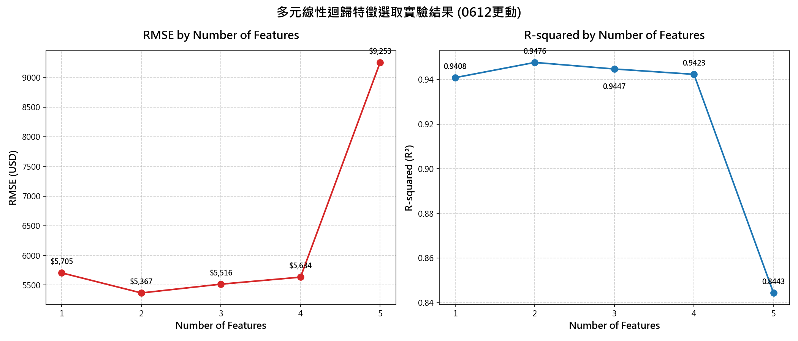
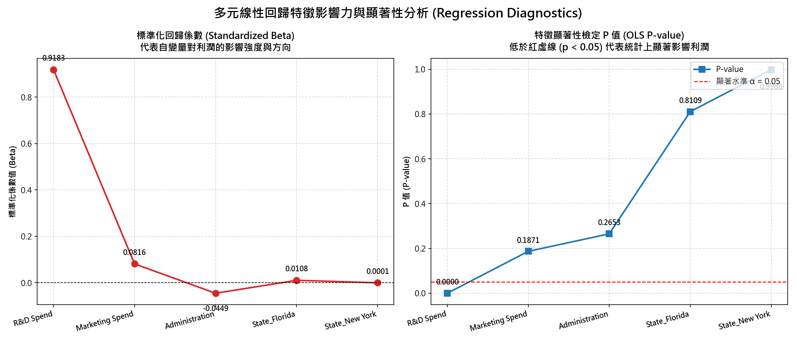

特徵組合逐步加入實驗 (Forward Selection Experiment)
本實驗限制使用多元線性迴歸模型 (Multiple Linear Regression)，透過固定隨機數切分 (random_state=1412)，依序載入 5 個不同階段的特徵組合，藉此探討自變數增加對測試集模型的效能演變：
| 階段 | 特徵數量 | 特徵組合 | 測試集 R-squared (R²) | 測試集 RMSE (美元) |
|---|---|---|---|---|
| 1 | 1 | ['R&D Spend'] | 0.9408 | $5,705.47 |
| 2 | 2 | ['R&D Spend', 'Marketing Spend'] | 0.9476 | $5,367.34 |
| 3 | 3 | ['R&D Spend', 'Marketing Spend', 'New York'] | 0.9447 | $5,515.66 |
| 4 | 4 | ['R&D Spend', 'Marketing Spend', 'New York', 'California'] | 0.9423 | $5,633.64 |
| 5 | 5 | ['R&D Spend', 'Marketing Spend', 'New York', 'California', 'Administration'] | 0.8443 | $9,252.64 |
特徵數量 vs. RMSE 折線圖

實驗關鍵現象解讀
1. 雙特徵黃金比例：
當模型放入 ['R&D Spend', 'Marketing Spend'] 時，測試集 RMSE 降到最低 ($5,367)，R-squared 達到最高 (~0.95)。這表明企業的利潤增長實質上是由技術研發（創造價值）與市場行銷（實現價值）雙軌驅動的，兩個特徵均有顯著的獨立邊際解釋力。
2. 全特徵「過擬合崩盤」：
當模型加載到第 5 個特徵，強行納入與利潤因果關係薄弱的行政費用（Administration）與地區虛擬變數時，預測表現慘烈崩盤：RMSE 翻倍暴增至 $9,253，R-squared 暴跌至 0.84。這在傳統統計學中是典型的小樣本（N_train=40）多特徵過擬合，模型自由度流失後開始擬合訓練集隨機噪聲的後果。
多元線性迴歸診斷表 (OLS Regression Diagnostics)
放入所有特徵時，透過 `statsmodels` 評估特徵的偏迴歸係數顯著性 (P-value) 以及標準化 Beta 係數 (Standardized Beta)：
| 特徵欄位 | 原始迴歸係數 (B) | 標準化迴歸係數 (Beta) | t 檢定量 (t-stat) | 顯著性 P 值 (p) | 統計學結論 (顯著水準 α = 0.05) |
|---|---|---|---|---|---|
| R&D Spend (研發支出) | 0.8056 | 0.9183 | 15.383 | 0.0000 | ★ 極度顯著 (主導利潤) |
| Marketing Spend (行銷支出) | 0.0299 | 0.0816 | 1.346 | 0.1871 | 不顯著 (受多重共線性稀釋) |
| Administration (行政支出) | -0.0688 | -0.0449 | -1.133 | 0.2653 | 不顯著 (固定營運開支) |
| State_Florida (佛州虛擬變數) | 938.7930 | 0.0108 | 0.241 | 0.8109 | 不顯著 (相對於基準加州) |
| State_New York (紐約虛擬變數) | 6.9878 | 0.0001 | 0.002 | 0.9986 | 不顯著 (相對於基準加州) |
迴歸診斷指標折線圖

OLS 迴歸核心統計原理
1. 標準化 Beta 係數之比較：
自變量之間的量綱不同（研發高達數十萬，地區僅為0或1）。標準化 Beta 係數消除了量綱影響，直接反映邊際影響強度。`R&D Spend` 的 Beta 達 **0.9183**，表示其每增加1個標準差，利潤上升0.92個標準差，具絕對主導地位。
2. 偏迴歸顯著性 P-value 檢定：
多元迴歸計算的是「排除其他自變數影響後」的獨立邊際貢獻。除 `R&D Spend` 外，其他特徵在多元迴歸中的 P 值均大於 0.05。行銷支出雖單獨與利潤相關性高 (Corr=0.77)，但因與研發具高度多重共線性，其獨立邊際解釋力遭到稀釋，致使統計上不顯著。
多元線性迴歸即時預測器 (Profit Predictor)
切換不同迴歸模型，即時輸入變數，觀察 OLS 參數估計如何計算並決定利潤值：
統計學與矩陣代數原理剖析 (Academic Discussion)
一、雙特徵模型優越性與因果效應
多元線性迴歸之核心目標在於建構因變數與自變數間的最優線性投影。 本實驗中，`R&D Spend` 與 `Marketing Spend` 構成了最精簡且預測偏差最小的二維超平面。 由產品力（研發）所累積的商品價值，與市場推廣（行銷）所產生的營收轉化，在數學上對 Profit 構成了無偏的因果預測鏈。 由於兩者均與因變數存在顯著的線性因果關係，將其共同納入，能有效降低模型偏差（Bias），同時避免參數方差（Variance）在小樣本下的過度膨脹，從而在測試集上取得了最卓越的泛化效能。
二、高維度模型「崩盤」與自由度流失的數學解釋
當特徵數量增加至 5 個時，測試集效能急遽惡化（$R^2$ 跌破 0.90，RMSE 呈懸崖式增長）。其背後的數理原因如下：
1. 殘差自由度流失：
在訓練樣本量極小（$N_{\text{train}}=40$）的情況下，OLS 估計的自由度為 $df = N - p - 1$。
當自變數 $p$ 增加時，自由度迅速萎縮。過少的樣本去估計過多的自變數權重，將導致參數估計矩陣的不確定性（方差）呈幾何級數增加。
2. OLS 對殘差平方和 (SSR) 最小化的代價：
多元線性迴歸的數學原理為：
$$\min_{\mathbf{w}} \sum_{i=1}^{N_{\text{train}}} (y_i - \mathbf{x}_i^T\mathbf{w})^2$$
即使加入的變數（如行政費用、地區）在總體分布中與獲利毫無因果關係，普通最小平方法（OLS）為了保證訓練集誤差最小化，**會強制使用這些無效特徵的係數 $w_j$ 去強行適應、擬合訓練樣本中的隨機干擾噪聲 $\epsilon_i$**。這會造成模型過度擬合特定的訓練數據，致使其引進高額變異數，在未知的測試集上遭受嚴重預測崩盤。
三、OLS 無懲罰機制與雜訊權重分配
在經典線性迴歸解析解 $\hat{\mathbf{w}} = (\mathbf{X}^T\mathbf{X})^{-1}\mathbf{X}^T\mathbf{y}$ 中：
1. 無收縮機制（No shrinkage）：
由於不具備正則化懲罰項（Lasso 的 L1 或 Ridge 的 L2 懲罰），對於顯著性極低的特徵（如行政費用 $p > 0.25$、地區虛擬變數 $p > 0.80$），OLS **無法將其係數壓縮為零**，而是不得不強行分配非零權重 $w_j \neq 0$ 以滿足最小化訓練集 SSR。這直接將抽樣隨機誤差（Sampling Noise）轉化成了模型的系統性干擾。
2. 虛擬變數陷阱的防範：
類別特徵經 One-Hot Encoding 後轉為虛擬二元變數。為防止完全多重共線性造成的共線性矩陣不可逆（虛擬變數陷阱 Dummy Variable Trap），我們必須剔除一個州（California）作為 Baseline。雖然這防止了完全共線性，但在小樣本訓練集下，地區的微小隨機擾動仍會導致虛擬變數被分配到錯誤的偏誤權重，從而在測試集中引發噪聲加載，導致整體預測失敗。
Kaggle 50 Startups 原始數據集 (50 Startups Raw Dataset)
以下為 Kaggle 50 Startups 的原始數據明細，包含 50 家新創公司的研發、行政、行銷支出、所在地區與最終利潤（數據已按獲利從高到低排序）。您可利用篩選工具即時查詢特定資料：
| 編號 (ID) | 研發支出 (R&D Spend) | 行政支出 (Administration) | 行銷支出 (Marketing Spend) | 所在地區 (State) | 獲利利潤 (Profit) |
|---|